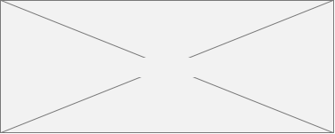
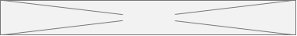
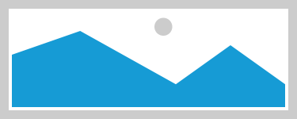

整体加载(Native/H5)
定义：加载完所有内容后，再展示给用户看。
作用：能保证内容的整体性，能系统化的阅读所有内容。
交互：显示在页面中央，先显示"加载中toast"，同时客户端拉取数据，全部拉取成功后再隐藏"加载中toast"，如果拉取失败则显示"失败toast"。
场景：某些重要页面，比如购物车
注意：可能有强烈的等待感，当超过3s后让用户产生焦躁。如果该页面是H5实现，逻辑也是相似的。
正在加载中…
分块加载
定义：根据资源类型进行先后加载。文字→图片→语音→视频封面→其他资源
作用：可以帮助用户快速阅读内容。
场景：文章阅读页、新闻详情页
注意：也许会丢失掉重要的关键信息，无法建立信息获取的闭环。
内容内容内容内容内容内容内容内容内容内容内容内容内容内容内容内容内容内容内容

图片已加载
视频已加载
视频未加载

语音未加载
内容内容内容内容内容内容内容内容内容内容内容内容内容内容内容内容内容内容内容
整页加载
定义：当前页与下一页是整页切换的时候，可以采用整页加载的形式。
作用：能保证每个页面的完整性，体验比较顺畅。
场景：全屏查看多图
注意：
• 不好保证整页的加载效率，且有可能影响浏览的流畅度。
• 每个页面的数据量不能很大。
3/5
分页加载(自动/手动)
定义：展示列表数据的时候，比如默认展示20条，滚动到最后的时候自动再加载20条。
作用：把用户代入无尽浏览模式，让用户一直向下滚动，不需要手动点击下一页。
场景：列表页，比如Pinterest的首页瀑布流
注意：没有尽头，容易迷失，不方便快速索引定位到某个内容。另外加载方式可选自动和手动点击2种。

内容内容内容内容
内容内容内容内容
内容内容内容内容
智能加载
定义：非WIFI网络下，只加载内容框架以及文字，图片视频等只显示占位符。点击占位符，才去获取真实图片。WIFI网络下，初始加载所有资源。
作用：根据具体场景来控件流量和加载速度。
场景：数据量比较大的页面，比如优酷的视频详情页
注意：不一定真实有效的命中用户需求。
WIFI预先加载
定义：有WIFI的时候预先加载常用数据，缓存到本地，当没网的时候，直接加载已经缓存下来的内容。使用了预加载+离线缓存机制。
作用：解决了没网获取数据的问题，且节约了流量。
场景：小说阅读App、视频类App。
注意：占用本地存储空间，有时候预加载的内容最后用户没看。
内容内容内容内容内容内容内容内容内容内容内容内容内容内容内容内容内容内容内容
图片未加载

分屏加载
定义：先加载框架和文字，再加载第一屏数据，向下滚动到哪里加载到哪里。
作用：可以帮助用户快速阅读内容。
场景：多屏并且数据较大的页面，比如h5电商活动页
注意：也许会丢失掉重要的关键信息，无法建立信息获取的闭环。
内容内容内容内容内容内容内容内容内容内容内容内容内容内容内容内容内容内容内容
图片未加载
视频未加载
视频未加载
语音未加载
内容内容内容内容内容内容内容内容内容内容内容内容内容内容内容内容内容内容内容
如何提升用户等待加载的体验？
一、尽量使用非模态的加载方式
加载的过程不打扰用户，无需等待加载完成就可以做别的事情，大大降低了等待的焦躁感。
即便是模态的加载，也要给一个取消的选项。
二、情趣化的加载动画
加载的过程如此的枯燥乏味，做点呆萌可爱的加载动画，让用户觉得好受一点。
三、漫长加载告知进度
如果是时间较长的加载过程，最好能清晰的告知过程进度，这时候就需要采用有进度的加载设计了。
浏览器的进度条是一种较为常见的进度告知设计，通过这个进度告知，让用户有了更加明确的知情权，也能更好的预期到加载完成的时间
但即便是小小的进度条，也有很多的设计技巧在里面。一个非常经典的体验设问，同样是3s的加载时间，匀速的进度条、先慢后快的进度条、先快后慢的进度条，哪个让用户感觉上最快？经过科学的实验证实，先慢后快的进度条是让用户心理感受上最快的设计。这是因为用户最容易记住最后一瞬间的感觉，如果最后一瞬间，感知到了快，就觉得顺畅了。
四、尽量提前加载
尽可能的利用预加载或有WIFI的情况下离线缓存的方式，把内容提前加载下来，这样能做到最大限度的降低加载给用户带来的卡顿感。如果能判断出来用户下一步要做的事情，提前帮用户加载相应的内容，肯定是最符合需求场景的事情。当我开始读第一页的时候，第二页第三页就开始陆续缓存下来了。
设计形式永远是服务于产品功能的，而产品功能则是为了满足用户需求。
第一：优化App的加载算法，使得App与服务器交互数据的时间简短。从根本上解决了问题，因为直接减少了加载数据的时间。
第二：采用预加载机制。拿阅读App打比方，当用户在看第一页的时候，App在后台加载完后面的几页，等用户翻到第二页的时候就不需要等待加载。建议在WIFI网络环境下采取这种预加载机制，而在蜂窝网络状态下则不采用预加载机制。
第三：异步处理。比如用Instagram点赞的时候会觉得特别流畅，即使在网络不好的情况下。因为你给好友点了赞，Instagram并不会提示你网络不好，操作失败，而是提示你点赞成功了，其实将它只是将你点赞的操作记录了下来，等网络一好就将点赞的行为上传到服务器，从而完成点赞行为。这就是减少用户的操作负担，让产品自己去解决问题，而不是把问题抛给用户。
加载失败，请重试！
分块加载
加载文字内容

按照存储类型
加载图片内容
加载语音内容

重要内容
次要内容

按照内容的重要性
层级高的内容
层级低的内容

按照信息层级高低
加载视频封面

加载其他资源